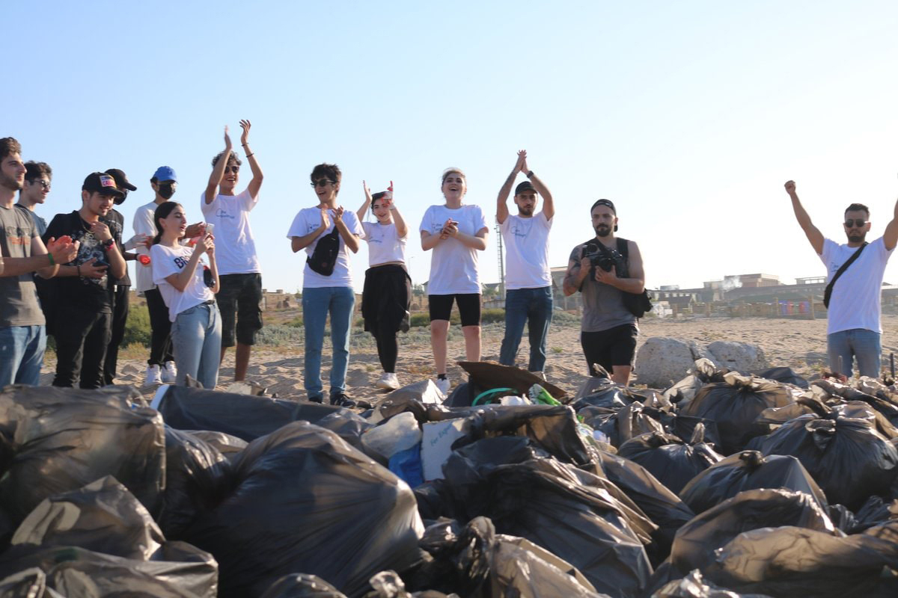
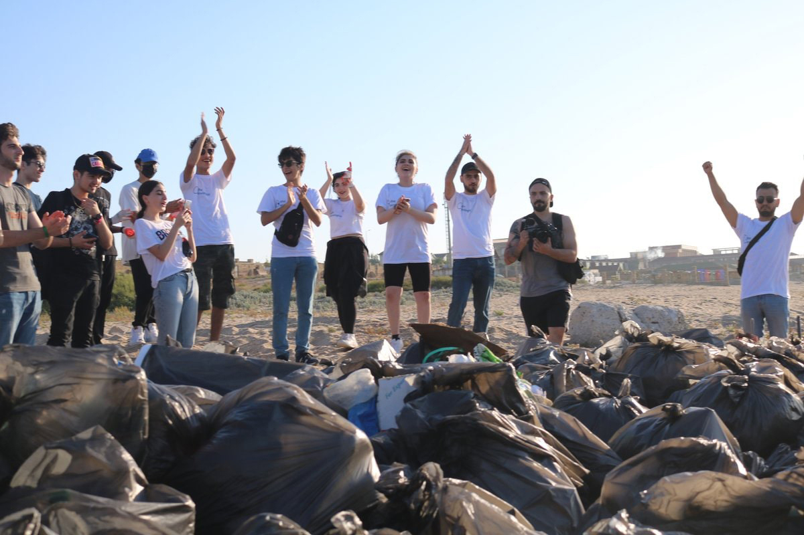

Нагиев Фаик Шадат оглу
Место учёбы: Диссертант. Азербайджанский Государственный Университет нефти и промышленности
Место работы: Ekol Mühəndislik Xidmətləri
Рубрика: Экология
Почта: naghiyevfaiq@gmail.com
Дата публикации: 05.09.2021
Интервью с основателем проекта "The Ecologist"
Как появилась идея создания проекта?
- Достаточно долго я встречал разные странички про экологию или людей, представляющих себя за «экспертов» в области экологии, которые давали либо не полную, либо не точную информацию. Так как я давно изучаю данную тему, получил образование в этой сфере и продолжаю учиться, я подумал что смогу создать что-то своё, более качественное, интересное и новое для нашей страны.
Расскажите, как Вы реализовывали Вашу задумку?
- Все началось со странички в инстаграме, где я писал посты про экологические проблемы страны, делился последними новостями в данной области. Сначала подключились друзья, аудитория начала расти. В определённый момент наша страничка стала актуальной. Потом ко мне обратились активные ребята, которые предложили делать различные ивенты. Так мы провели первое мероприятие по очистке пляжа от бытовых отходов. И это конечно же наш не последний ивент, я надеюсь. Сейчас у нас в команде уже 7 человек.
 

А какие возникали неожиданные трудности, и как Вы их решали?
- Самый главной проблемой является недостаток времени. Очень сложно находить время для странички, создания ивентов и т.д. Все потому что мы все работаем в разных сферах, у каждого свои дела и проблемы. Но мы не сдаемся, помогаем друг-другу и делаем все самое лучшее.
Второй проблемой является недостаточное количество спонсоров. Ведь каждый ивент это достаточно большие затраты. Если на первом мероприятии у нас была поддержка спонсоров, то сейчас ее не так много, к сожалению. Но и тут мы не унываем и стараемся находить новых заинтересованных лиц.
Было ли какое-то неожиданное событие, которое пошло Вам на пользу?
- Для меня было неожиданно, что этот проект заинтересует так много людей, и что ко мне обратятся люди, которые захотят помогать мне, сделать проект больше, создавать проекты. Это невероятное чувство.
Совпало ли Ваше изначальное видение проекта с тем, какой он сейчас или в процессе он "заиграл новыми красками"?
- На самом деле нет, я не представлял свой проект таким, какой он сейчас. Ведь он создавался только для информирования подписчиков по поводу Экологии с помощью коротких статей (постов). За короткий срок из обычной странички в социальной сети мы превратились во что-то большее. Сейчас планы ещё больше, надеемся создать целое движение «зелёных» в Азербайджане.

Раскройте секрет, есть ли что-то, чего Вы не реализовали? Что Вам помешало?
- Пока все идёт четко по плану. Конечно, даётся все с трудом, ведь мы все это делаем только на энтузиазме и желании сделать что-то хорошее для страны. Мы не зарабатываем с этого проекта, наоборот, только вкладываемся в него.
Коротко, что представляет собой проект сейчас?
- На данный момент это информативная платформа, которая старается создавать интересные проекты, осведомлять людей о проблемах в области экологии.
И, напоследок, какие дальнейшие планы?
- Дальнейшие планы, как я уже отметил, только увеличиваться, хотим создать свой бренд, своё движение. Надеемся создать организацию в будущем!